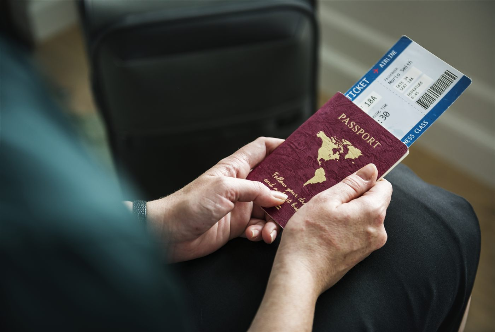

F-1 체크리스트는 어디나 같은 서류를 나열하고, 사실 서류는 어려운 부분이 아닙니다. 신청은 코스 시작 6개월 전부터 할 수 있는데, 학생들이 한 학기를 날리는 가장 흔한 이유는 대사관 인터뷰 예약을 늦게 잡는 것입니다. 순서와 고정비 두 가지, 그리고 중요한 습관 하나를 적습니다.

순서는 여섯 단계입니다
첫째, I-20. SEVP 인증 학교만 발급하며 입학 수락과 재정 확인 후 1~2주면 나옵니다. 둘째, SEVIS 수수료 $350를 인터뷰 전에 내고 영수증을 보관하세요. 인터뷰와 입국 심사에서 다시 확인합니다. 셋째, DS-160을 온라인으로 작성하고 확인 페이지를 출력합니다. 이게 없으면 예약이 안 됩니다. 넷째, 인터뷰 예약. 신청료는 $185입니다. 다섯째, I-20·여권·SEVIS 영수증·재정 증빙을 들고 인터뷰에 갑니다. 결과는 대개 그 자리에서 알려주고 여권은 1주 내외에 돌아옵니다. 여섯째는 나중 일입니다. 졸업 후 OPT로 12개월 일할 수 있고 STEM 전공은 24개월이 더 붙습니다.
왜 예약이 진짜 마감인가
여름 성수기 주한 미국대사관 예약은 몇 달 전에 마감됩니다. 8월 말 개강인데 I-20이 6월에 나오면, 서류가 다 준비돼 있어도 잡을 수 있는 가장 빠른 인터뷰가 개강 뒤일 수 있습니다. 이를 막는 습관은 단순합니다. I-20을 받은 그날 인터뷰부터 예약하는 것입니다. 날짜는 나중에 바꾸더라도요.
재학 중에 허용되는 것
교내 아르바이트는 학기 중 주 20시간, 방학에는 주 40시간까지 가능합니다. 교외 근무는 CPT나 OPT 승인이 필요하고, 승인 없는 교외 일자리는 없습니다. 과정이 끝나면 60일 안에 출국하거나 신분을 바꿔야 합니다. 수수료와 규정은 바뀌니 신청 전에 국무부·국토안보부 페이지에서 현재 값을 확인하세요. (2026년 8월 기준)